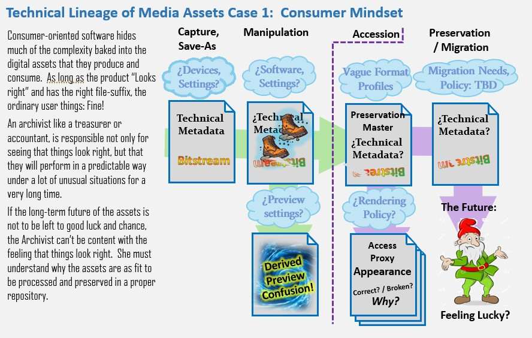
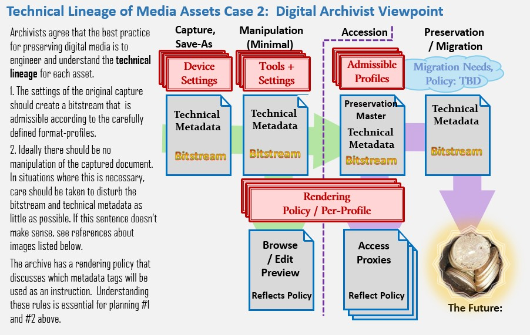

Recommended Media Formats for CHC Omeka Applications
Topic Index
- Lifecyle Concerns for Archiving Digital Data
- Media Lifecycle Concerns
- Quick Links for creating and sabing PDFa Files
- Recommendations for Image Files
- TIFF Format
- File Names
- Single Page
- Color Representation / Bit Depth
- Color Profiles
- Compression
- Pixel Dimension
The Consumer vs Archivist Perspective on Digital Media
To an ordinary user, digital media appear as files that are supposed to display some kind of audio-visual content. They almost always perform as expected in a variety of tools. The question of how image files and PDFs are encoded and how they are rendered is hidden from the ordinary users. As long as the display of the content looks right in whatever viewing or editing tool you are using.

Media Files are Packages
A digital media file is either captured by a device: scanner or camera, or resulted in some kind of a save-as from a program or download. In any case, the media file is a package that typically has two parts:
- Technical Metadata which may describe the device or media creator and other details about the context.
- Bitstream: the graphical content. In the case of an image, this would be systematic descriptions of pixels.
Technical Metadata
There are several schemes for embedding technical metadata tags into a media file. In the context of CDASH, the important ones are EXIF, XMP and TIFF. Each of these schemes uses tags to describe aspects of the lineage of the file. It seems like any sort of media file may have metadata embedded in one or more of these schemes.
Orientation: One of the most interesting tags, which is found in at least two of the common schemes for embedded metadata. The tag is a means of recording whether the device, or the original was in landscape or portrait orientation (among other options) documents. In the case of an image from a hand-held digital camera, the value of the Orientation tag is recorded from the device accelerometer at the moment of capture and written to the media's EXIF:Orientation tag. In the case of a scanner, the orientation tag may be switched by the operator by flipping the orientation of the scan preview. I think that in this situation, the value is written to the embedded XMP metadata.
Bitstream Data
The Bitstream portion of a media file can be thought of as the content of the media file. Each format family, like TIFF or JPEG or PDF will have its own conventions for how the bitstream is encoded. Within each of these families, there are distinctive variations. These variations are what make it necessary to define Format Profiles because just saying TIFF, or PDF is is not specific enough to stipulate how a tool should render the content.
You can look at our listing of Format Profiles, below to see some of the ways that bitstream characteristics such as pixel-organization, color model and compression or archival compliance level can be used to declare a format profile that will ensure reliable rendering.
Rendering, Preview & Confusion
Ordinarily nobody looks at the actual bitstream, you only see a rendering or a preview of it. This preview may or may not involve transformations, such as rotation, or color adjustments based on the values of tags included in the technical metadata.
The question of whether technical metadata should cause the bitsream to render one way or another is sometimes presented as a user-preference option in some technically oriented tools. Most user-centric tools will do /or not-do/ it one way or the other. The potential for confusion multiplies when you consider the possibility that different sorts of embedded technical metadata can be contradictory. And it gets even more devilish when a well intentioned contributor who applies a mis-guided rotation to the bitstream after being confused by a rendering mis-corrected according to tags....
All of this sounds humorous, but can be quite vexing when a stream of this sort of image sneaks into the repository and is not discovered until some new sort of display module reveals that the collection is now infiltrated by thousands of roque assets that cause unexpected problems.
An Archivist's Viewpoint on Digital Media
An archivist can appreciate how an image works well in a page-view, they also have to worry about whether a collection of one million images will perform reliably in a digital media ecosystem of 100 years from now. Most likely, this ecosystem will be one where the formats that we use today will no longer be "what everyone uses." The archivist must have a level of understanding that allows her to foresee problems that a normal user would have no clue about.

Maintaining Control in Archival Accession and Management
How does the archivist develop a professional level of confidence that the repository being built day by day is sustainable and ready for the next inevitable migration to the media formats of the future? By understanding and applying the following principles:
- Define Format Profiles that can be generated by the devices at hand, and reliable for the archival applications including presentation and migration.
- Test and document the way that each profile is created for each device or digital capture method. Educate all technical assistants.
- For each format profile, define rendering rules and expectations that are simple and conventional.
- Understand situations where manipulation of media is necessary, how this can be done without unwanted disruption to the bitstream and technical metadata.
- Make sure that previews generated by manipulation tools follow the aforementioned rendering rules.
- Validate that the files are compliant with format profiles on accession
References
I'm still looking for a beginner's guide to digital media. Here are some references that go right nto the deep end of digital preservation, media and technical lineage:
- Library of Congress Recommended Formats Statement
- Federal Agencies Digital Guidlines Initiative, (FAGDI): Technical Guidelines for DigitizingCultural Heritage Materials( 2023) See the tables beginning on Page 27,
- U.S. National Archives and Records Administration (NARA) Technical Guidelines for Digitizing Archival Materials for Electronic Access: Creation of Production Master Files – Raster Images Accessed from https://www.archives.gov/files/preservation/technical/ (See Page 60.
Admissible Format Profiles and their Use-Cases
From the consumer perspective Media formats like TIFF, JPEG and PDF are expressed as the file-type or the suffix that appears on file names. To an archivist, these formats are actually more like families of special-purpose encodings that may be more or less compatible or incompatible with a particular application. When it comes to archival needs, discussion of format needs to go deeper than these familiar family names.
The following description of admissible format profiles attempts to describe the parameters that you should be able to find in the user-preferences or save-as options on your devices and media manipulation tools.
TIFF Format Profiles
Use Cases TIFF is the default format for scanned documents that represent views and paper artifacts like photos and ephemera.
No Multi-Page TIFFs All TIFF images must contain a single image frame. Multi-frame or multi-page tiff files are not accepted.
No Transparency Layers (aka alpha channel) THis applies to 16-bit and 32-bit tiffs. TIFF images should be flattened before saving out of editing tools.
LZW Compression preferred Where possible, LZW compression should be applied to the bitstream at the time of collection.
Admissible TIFF Color Models:
- Standard RGB (sRGB), three chanel, 24-bit: THis is the default color model for scanned paper documents and photographs. (Preferred)
- 8-Bit Grayscale is occaisionally used for tiffs generated frmo born-digital media that is strictly monochrome.
- 1-Bit Black and White this should be very rare. It sometimes results from images exported from vector-based originals like CAD drawings.
CDASH-Specific Use-Cases:
- Architectural Inventory Form (AI) - TIFF
- Contact Sheet (CS) - TIFF
- Detail View (VD) - TIFF
- Ephemera (EP) - TIFF when image-dominant (tend to
- lean towards image/TIFF)
- Exterior View (VE) - TIFF
- Interior View (VI) - TIFF
- Plan View (VP) - TIFF
- Supplemental Material (SM) - TIFF when image-dominant
TIFF Rendering Rules: The bitstream will be rendered as is. AAny rotation or color profile adjustments must be baked-in. Technical metadata tags will be completely ignored for rendering and migration.
JPEG Format Profiles
JPEG images are normally frowned upon as preservation masters, because JPEG compression is not reversable, and will lose fidelity if the images are re-sampled. Nevertheless, when considering the potential formats created by cell-phone cameras, JPEG is actually the most archive-friendly option. And considering the way that photographs of scenes register in the eye, the effect of JPEG dithering is not considered a problem.
Use Case: Photographs from portable digital cameras.
Resolution & Compression: ~10 or more megapixels, Minimum compression (quality factor closer to 100)
Color Model: Outwardly, our jpgs will render with Standard RGB (sRGB), and internally the bitstream is YCbCr. Other profiles of Jpeg are rare and not admissable.
Rendering & Migration Rules: JPEGs will be rotated according to the value of the EXIF: Orientation tag. All other tags and color profiles will be ignored.
PDF/a Format Profiles
Compared with image formats, PDF is a very complicated graphical format that can carry vector graphics including crisp geometrical shapes and scaleable fonts and searchable text, systematic pagination and outlining. These advantages come at a cost of complicating the technology for rendering and viewing the documents. Special PDF plugins are easily accessible in web browsers today, but it is likely that in the future when newer document formats replace today's PDFs the plug-ins or whatever technology people use to browse archives, may not be as universal or easy to use.
In anticipation of tha challenges of long-term preservation and migration of PDFs the archival community and software developers have developed several archival flavors of PDF. This is another format family, known as PDF/a but this family name encompasses several conformance profiles, some of which are admissible to CDASH, and some aren't.
Admitted Conformance Levels: PDF/A-1, PDF/A-2 and PDF/A-3 are admissible. PDF/A-4 is excluded because these files can carry arbitrary attached files.
General PDF Use Cases: Use PDF/A for
- Born-digital documents and downloaded web-pages. (see print-to-pdf instructions below)
- Documents with systematic pagination.
CDASH-Specific Use-Cases:
- Correspondence (CD) - PDF/A
- Demo Memo (DM) - PDF/A
- Historic Buildings Survey (HS) - PDF/A
- Published Material (AM) - PDF/A
- Research Form (RF) - PDF/A
- Research Notes (RN) - PDF/A
- Supplemental Material (SM) - when text-dominant
- Ephemera (EP) - when text-dominant (tend to lean towards image/TIFF)
Quick Links for Scanning and Saving Archival PDFs
Here are some PDFs that describe how Historical Commission staff can compile Archival PDFs as sequenses of scanned pages, or save digital documents as Archival PDF from digital documents.
Intervening Manipulation
Sometimes there are good reasons to edit, transform or otherwise manipulate a media package either through its embedded tags or modifying the bitstream or both. From the archivists perspective, the asset that is saved from whatever tool that was used is a completely new product with unknown properties from an admissibility perspective.
It is best to avoid the manipulation stages if possible. When it is necessary, the work should be done by someone who understands the concepts covered in this document, and that the behavior of the tools has been tested with specific documented Save-As preferences and rendering behavior for a specific target format profile.
The goal in any manipulation scenario is to avoid disturbing the bitstream:
- Avoid rotation if you can.
- Rotation in exact increments of 90 degrees may be possible to do without resampling pixel values
- For TIFF images, rotation needs to be carried out on the pixels, not merely by toggling an orientation tag.
- For JPEG's rotation in 90 degree increments should be accomplished with the orientation tag.
- Straightening (incremental rotation) may be done when necessary.
Recommended Tools
For cropping and straightening JPEG cell-phone images: choose the newer of the WIndows Photo editing tools.
...need save-as instructions here
For manipulating TIFs:...
...to be continued.